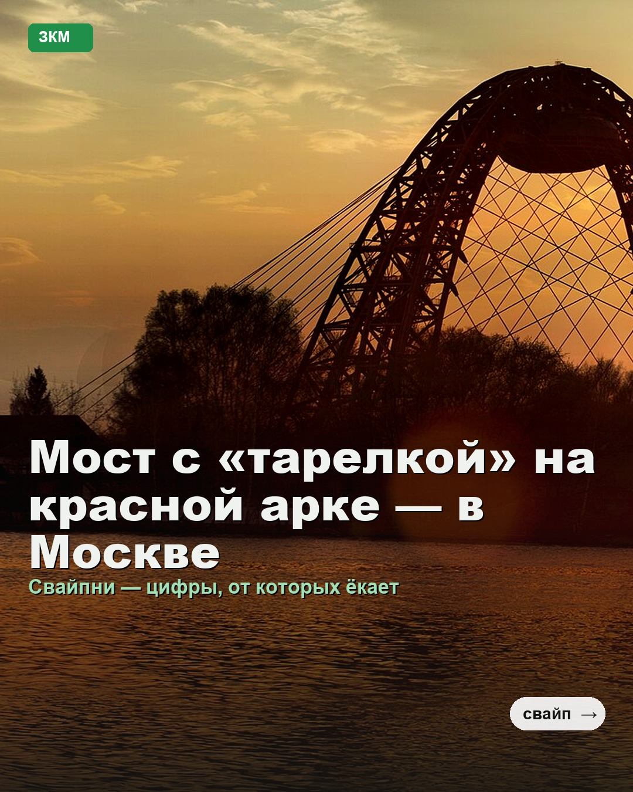
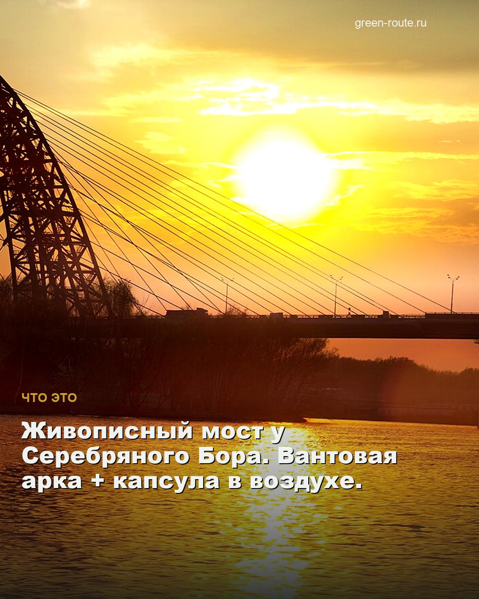
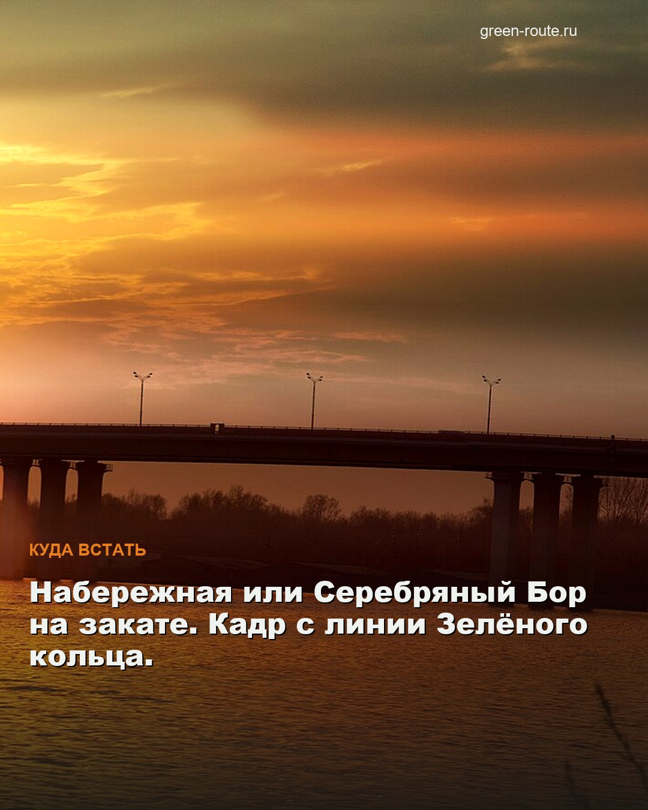
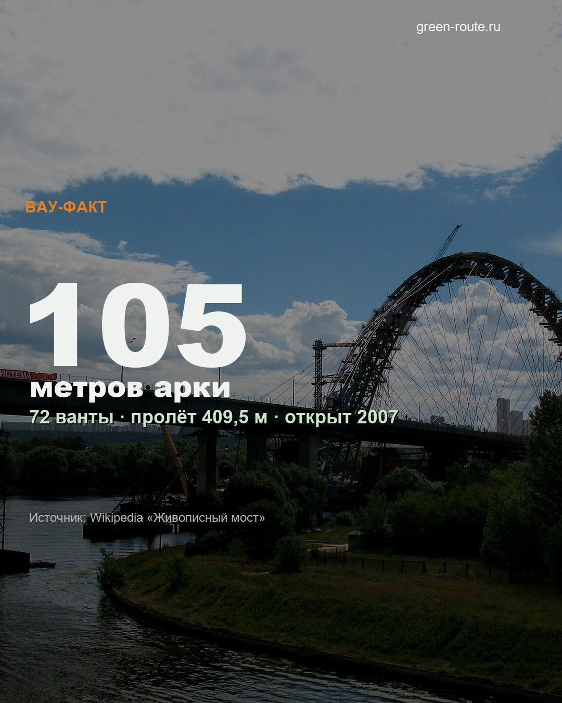
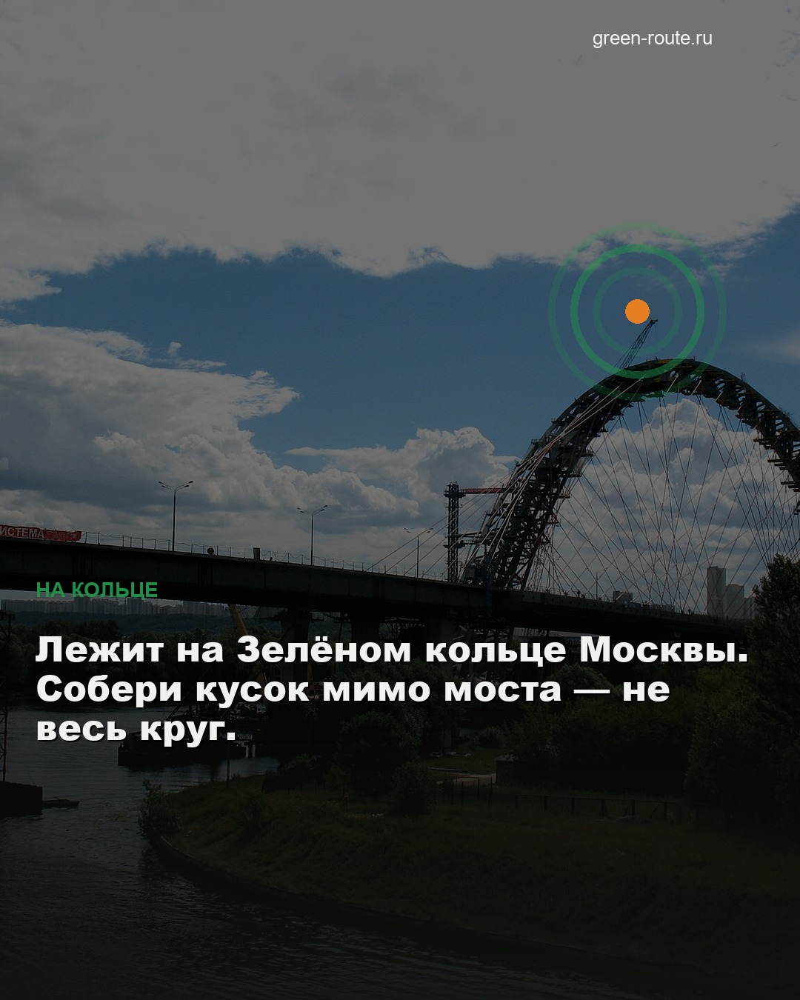
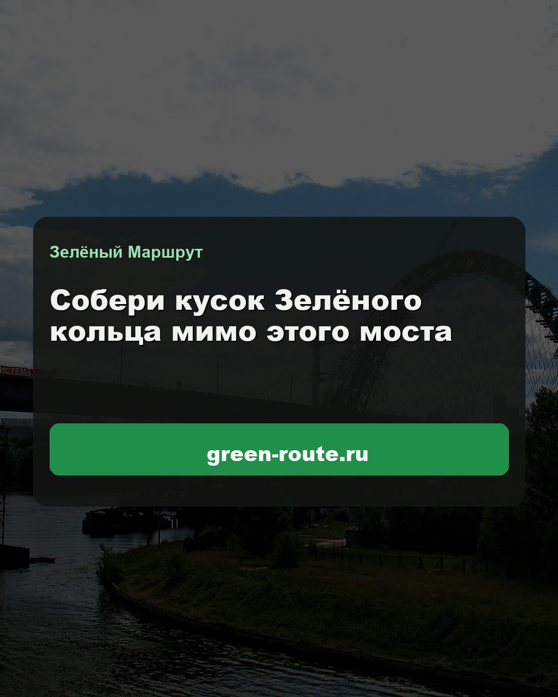

Живописный мост — готовые слайды 4:5
Реальные фото (Wikimedia) + хук / вау-факт / CTA по правилам каруселей 2025–26.
Слайды 1–3 — один continuous SCRL-панорамный канвас (арка «уезжает» при свайпе).
Бренд: Зелёный Маршрут · green-route.ru.
1080×1350
6 слайдов
SCRL seam 1→3
CTA #1
ЗМ
zeleny.marshrut
Зелёный Маршрут · Москва






♡ 💬 ➤ 🔖
zeleny.marshrut Мост с «тарелкой» на красной арке — на Зелёном кольце.
Собери кусок → green-route.ru
Свайпай как в Instagram. Файлы слайдов: export/zhivopisny/ — их же заливаешь из SCRL/галереи.
Почему так (не градиентная подделка)
- Slide 1 = 80% успеха — крупный хук, контраст, «свайп →» только здесь, без CTA.
- SCRL seam — слайды 1–3 нарезаны из одного ultra-wide фото арки.
- ≤ ~2 коротких блока текста на слайд; цифра 105 занимает кадр.
- CTA только в конце — green-route.ru + Зелёный Маршрут.
- Прод: собери то же в SCRL со своими фото / этим экспортом как референс.
→ Ростокинский акведук
·
система контента
Перерендер: python3 render_carousels.py